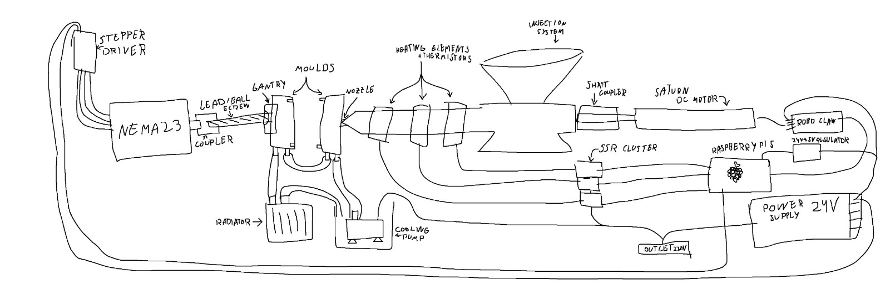

01
An idea appears
Sketches
My 3D printer is too slow and we can't afford industrial machinery. But what is in between?
Thus, we started sketching a machine that can manufacture high quantities for cheap.
- Research the injection process
- Separate the machine into sub-systems
- Separate the sub-systems into individual components
